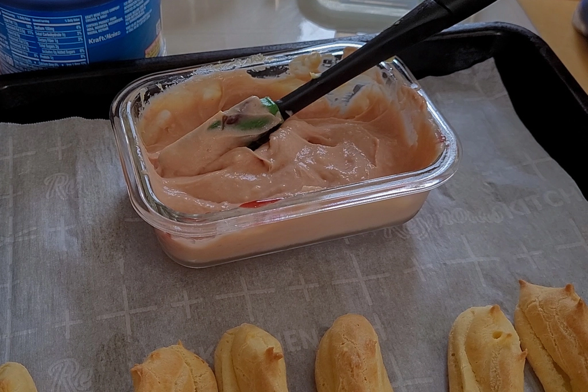
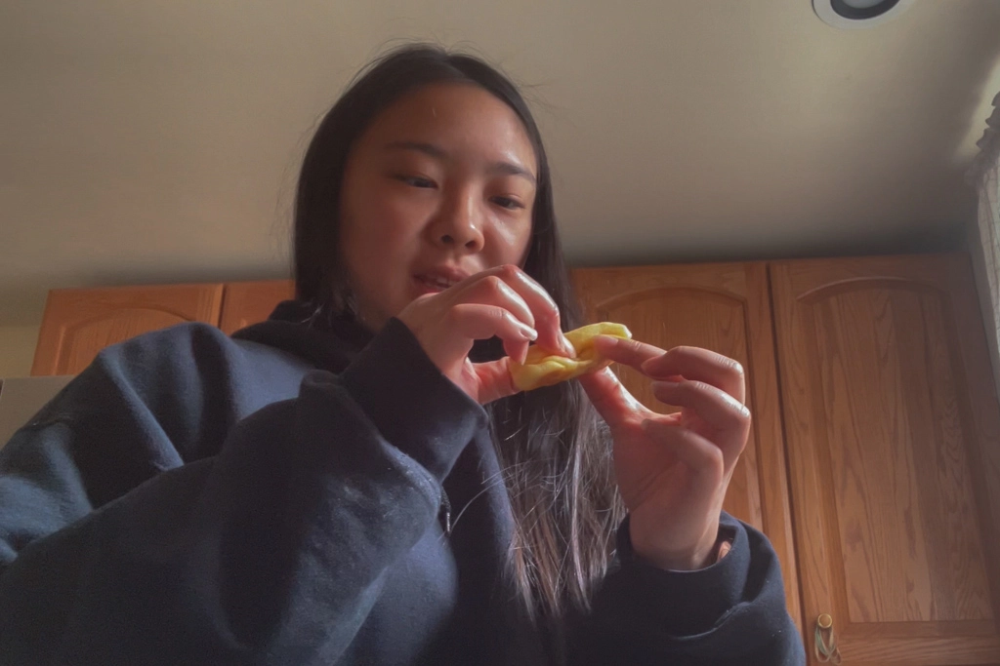
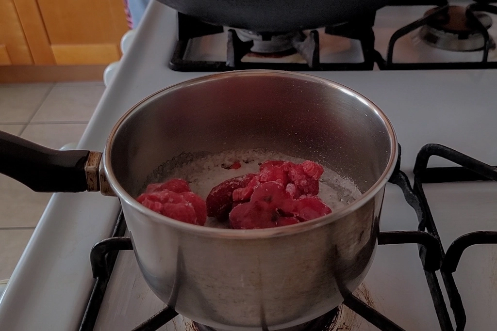
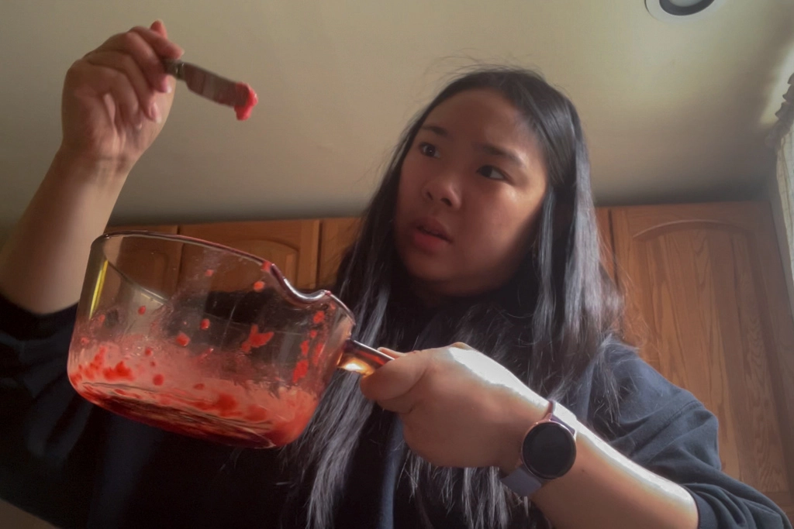
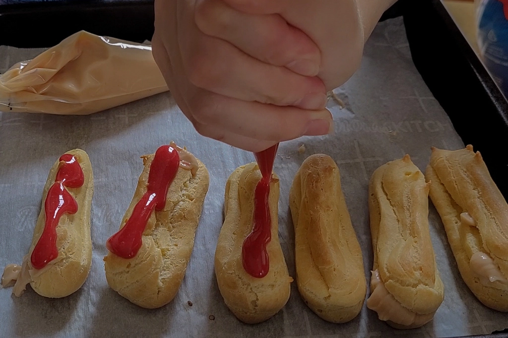
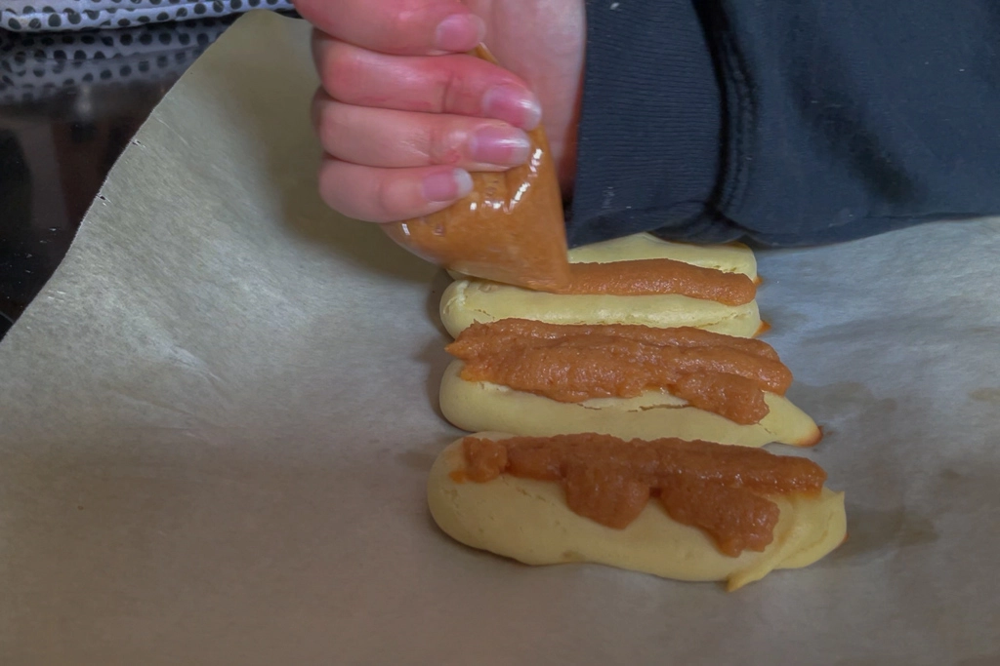
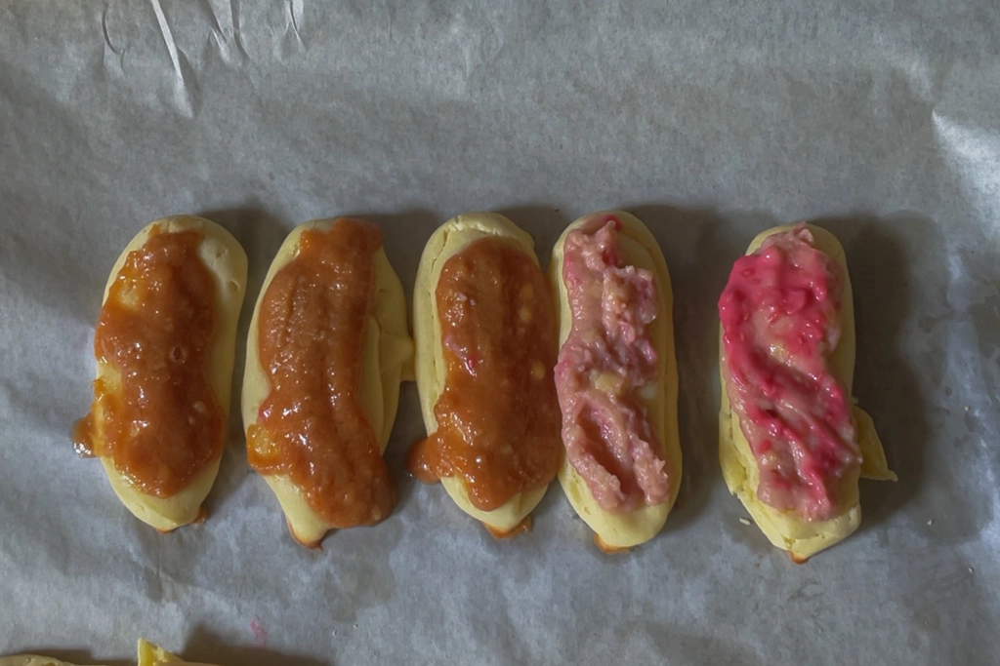
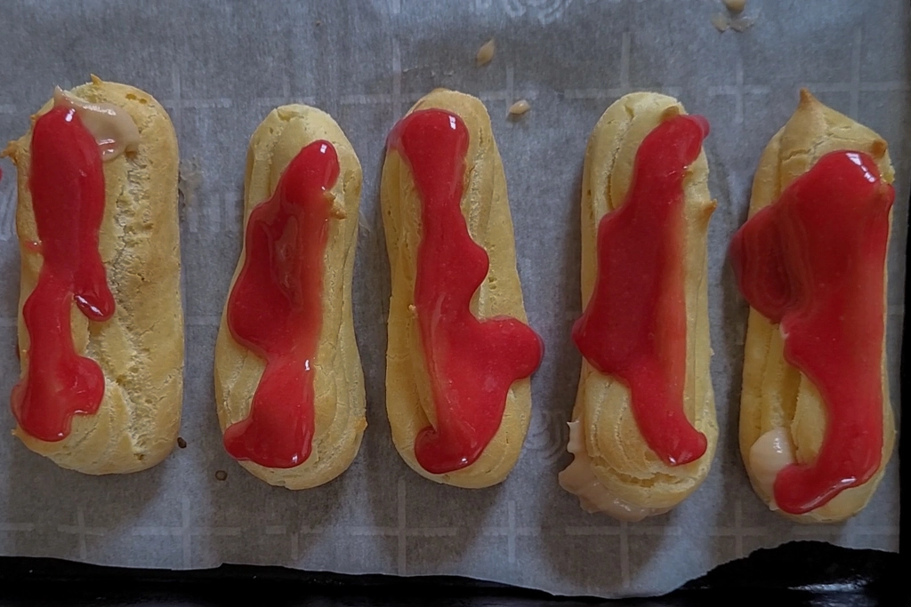
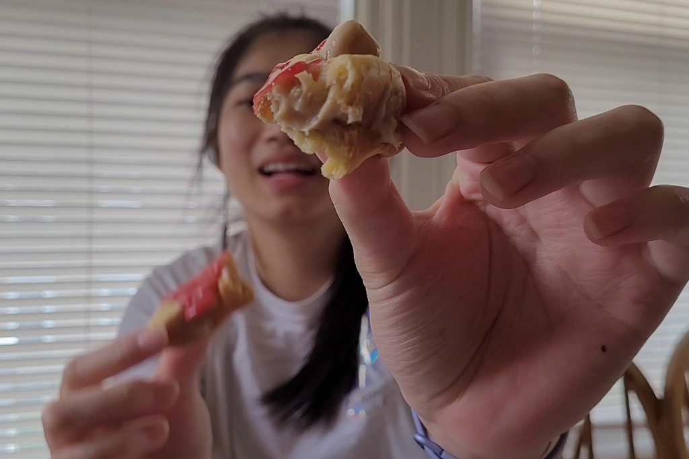

The Great British Baking Show Technical - Eclairs
May 13 - Written by Bonnie and Emily
As fans of the Great British Baking Show, we knew we had to one day tackle one of the infamous technical challenges seen on the show.
If you aren’t familiar with what a technical challenge is, it is one of the segments the contestants face in each episode where they have to recreate a recipe with minimal instructions. The lack of instructions shows which bakers really know their stuff - oftentimes, the missing instructions are the basic concepts that most bakers should be familiar with.
For our rendition, we went online in search of one of the many technical challenges we’ve seen on the show and landed on Prue’s Raspberry and Salted Caramel Eclairs. Most of the technical challenge recipes can be found online; however, since they provide the full recipe we modified the instructions to mimic what the contestants may have been given. Since neither of us have ever made eclairs before, we knew this was definitely going to be a challenge. On the bright side, we have both made cream puffs before and since eclairs follow a very similar approach and ingredients we figured it wouldn’t be too crazy to try.
Since we broke up the filming of this into two days, we decided it was best to make the pastry cream first as that could sit in the fridge until our second day of filming. Pastry cream is quite simple to make if you know what you are doing--emphasis on knowing what you’re doing. Since there were no hints in the show as to what the instructions were like for the pastry cream, we left the basic idea of what must be done to ensure that we wouldn’t be too far off from how it's intended to be. The biggest challenge here was remembering to pour the hot milk mixture slowly while whisking the eggs to make sure our cream didn’t turn into scrambled eggs.
Next up, the pate a choux. In the episode this challenge is in, they specifically mentioned that the instructions say “Make the choux pastry” making this the hardest step within the entire recipe as it required one to know what choux pastry is and the correct order in which to add in the ingredients. Emily had an understanding of the order of things as she has made cream puffs before (once being the croquembouche we both made for our Christmas series). Bonnie on the other hand definitely didn’t remember how we had made the croquembouche and ended up having quite a different experience.
What happened to Bonnie’s choux pastry is still a mystery to us till this day. The first time she tried to make the dough, she had mixed in the eggs, the last step without waiting for the pastry to cool. This ended up cooking the eggs a little bit and made the dough ten times harder and thicker than it should be. Since her first attempt ended up being raw and looking like bread sticks, she tried a second attempt at her choux pastry--which really didn’t end up any better than her first batch. Pinched for time, she made sure to let her batter cool before mixing in the eggs which led to a softer dough that looked like typical choux batter but still ended up coming out like thick breadsticks after baking and didn’t rise. Our last analysis of this choux saga made us wonder if the measurements of the ingredients may not be accurate enough since we halved the recipe leading to some wonky batter! Nevertheless, Bonnie had to serve up her raw breadsticks when the timer ran out and made do with what she had at her station.
Once the pate a choux was finished, we moved onto the flavors for our fillings - the salted caramel and the raspberry puree. Caramel is a more difficult thing to make as it takes patience and making sure the sugar doesn’t crystalize. Emily has made caramel many times but still struggles with doing so and in her first attempt at making the caramel, the sugar crystallized forcing her to pivot. Instead of wasting the sugar mixture, she decided it was best to just make it her raspberry puree. Once that was completed, time was running out so she had to quickly decide whether or not it was worth it to attempt the caramel again. As Bonnie was still behind, she figured it didn’t hurt to try it again. Though she succeeded in making the caramel the second time around, she didn’t quite get it right as it quickly hardened into a solid block of caramel rather than being liquid and spreadable. This was likely due to her having to improvise and use milk instead of heavy cream so in the end, the caramel just wasn’t happening.
Although Emily had a rough time making her caramel, the only correctly made thing that Bonnie was able to succeed in was her caramel. Somehow she was able to heat it up quickly and make a pretty decent and delicious salted caramel for her cream. Since she had to make her raspberry with very little time left, she just threw all the ingredients in the pot and gave up on measuring specific ingredients. But, despite how successful her raspberry puree and caramel went, everything came crashing down when she heard Emily say icing. Since she was so rushed, she didn’t have time to read through all the instructions in the recipe and didn’t know that she was supposed to leave some caramel and puree leftover to make icing that would decorate her eclairs. Instead, in the midst of all the chaos, she had dumped all the puree and caramel in bowls of her hardened and gloopy pastry cream and didn’t have any leftovers to make icing. Not to mention, she was quite positive she had scrambled the eggs in her pastry cream and made a very slimy and thick cream that created a chunky filling when mixed with her caramel and puree. Needless to say her eclairs were taking a turn for the worst.
As all the parts were now completed, it was time to assemble! Since Emily had no caramel, she just stuck to making all raspberry eclairs. Her pastries looked great in the oven but once they had cooled, they had also deflated so when it came time to assemble them, it was a bit messy as they couldn’t hold much cream and if she piped too much cream, it’d just come right back out the hole. Once she got them filled as much as she could, she piped some raspberry icing on top and though they were messy, they were decently successful.
With all the disasters that Bonnie had, there really wasn’t much assembling to do. She took the second batch of her choux out of the oven to find them still in the same state of “raw breadsticks” as her first batch. Since she didn’t have any icing and didn’t have pastries that she could pipe her chunky cream into, she opted for a second option. Replacing the icing with her pastry cream, she piped the tops of her raw choux with cream instead. She figured it was better to serve something than nothing at all! That was how her very inedible eclairs came together.

Bonnie's Eclairs

Emily's Eclairs
Though we both had drastically different experiences and results in making these eclairs, neither one of us would have made it as the star baker for this challenge. Although, you can definitely tell who has had a little more experience baking despite the croquembouche experience. It just goes to show how crucial it is to have the correct measurements, ingredients, and steps when it comes to baking because there is only so much improvisation one can do. Nonetheless, this was a fun challenge to test our baking knowledge and skills and give us a chance to just experiment with baking in general. This was so enjoyable we would definitely do this again but probably with a different recipe not from the show.
